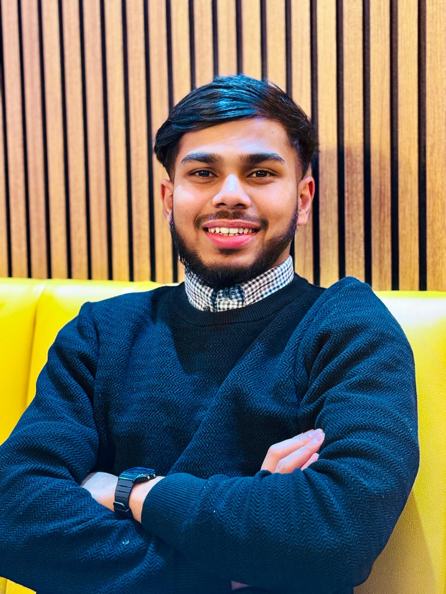

2025 — PRESENT
Manager
Sweet Official LTD
Promoted to manager after joining the company as a staff member in 2022.
Visit company website ↗Business · Management · Communication
A business professional with a background in management, media, and community engagement.

Good work starts with curiosity, grows through communication, and matters most when it creates a positive impact.
✳I am Noushad Khan Hemal, a business professional with a background in management, media, and community engagement.
My experience spans business operations, journalism, and organizational leadership. I value continuous learning, effective communication, and professional development. I am always open to exploring new opportunities, building meaningful connections, and contributing to initiatives that create a positive impact.
A selection of professional and community roles.
Sweet Official LTD
Promoted to manager after joining the company as a staff member in 2022.
Visit company website ↗Sweet Official LTD
Joined the company in 2022 before moving into the manager role in 2025.
Visit company website ↗GB Television
Former staff reporter, with further details to be added if available.
Bhadeswar Social Advancement Association (BSAA)
Former organizational role focused on media and communication.
Visit BSAA website ↗Bangladesh Jatiyatabadi Chatradol · Sylhet Zila
Former executive member. This entry records a past role only.
Bhadeswar Nasir Uddin High School & College
Dhakadakshin Multilateral High School & College
University of Huddersfield
Interested in new perspectives, meaningful collaboration, and opportunities to learn through experience.
✳For professional enquiries, collaboration, or a simple hello.
Choose an option below to reach out directly.
Hyde, Greater Manchester, UK